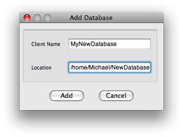

Adding a Database
By default Adun stores its data in a file-system database located in your home directory. However you don't just have to have one database, you can have many. You can create new databases yourself, or add an already existing database that resides in a shared directory. What's more in the near future you'll be able to add databases that are located on remote computers!

To add a database:
- In the main menu go to Tools->Database->Add. This opens the 'Add Database' panel.
- In the 'Location' field type the full path to where you want the top level directory of the database to be.
For example $HOME/NewDatabase/
- In the 'Client Name' field give a name to the database. This is what will appear in Adun's database browser.
- Click 'Add'. The new database immediately appears in the browser.